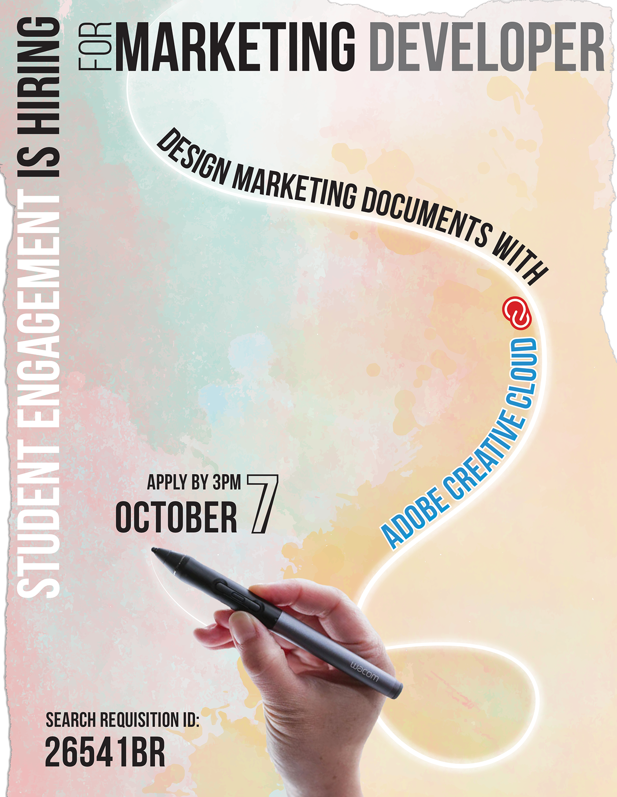

☰
I wanted to create a poster that would catch the eye of student designers around campus and give them a taste of the type of documents they would be designing. I opted to prioritize design over function for my target audience of design students. I included a Wacom pen, a favorite tool of graphic designers, and the Adobe logo for extra touches.
